Platforms & Systems
Enterprise platform design, admin and CMS tooling, and operational workflow UX from 0→1 through scale-and-maintain for global teams.
Where systems and data meet, the tiger still sniffs the rose.
Enterprise platform design, admin and CMS tooling, and operational workflow UX from 0→1 through scale-and-maintain for global teams.
Contributor to Walmart's LD 3.5 framework; built a navigation sub-system standardizing map, search, and location patterns across enterprise products.
Physical-digital service design across kiosks and preregistration flows, with WCAG-grade accessibility built into every global touchpoint.
AI-assisted incident reporting in Warden, and conversational + AR associate assistance in ITFOW, bridging physical tasks with digital intelligence.
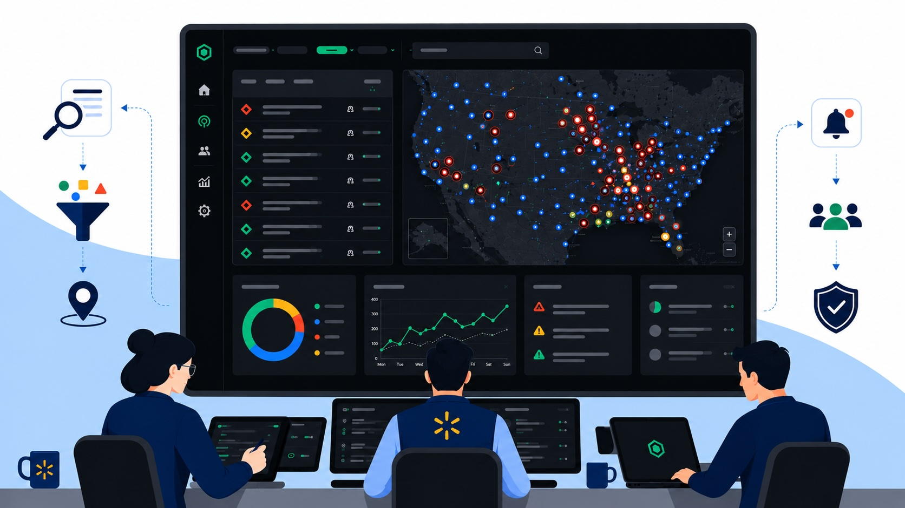
In ProgressA global security operations platform enabling real-time incident response, emergency coordination, and AI-assisted reporting across Walmart's worldwide footprint.
A unified kiosk and preregistration system scaling accessible UX across physical and digital touchpoints for Walmart's global campuses, from Bentonville HQ to Bengaluru.
An extensible CMS and permissions system for managing visitor data and access across Walmart's secure facilities, serving as the operational back-end to the Visitor Check-in experience.
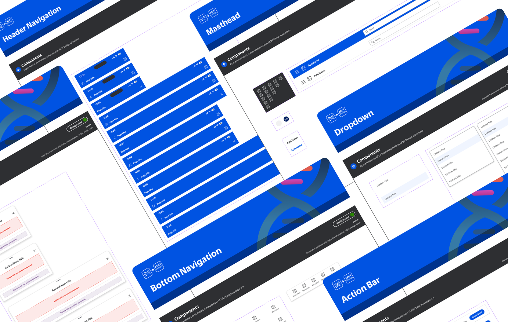
ShippedA navigation sub-design-system inside Walmart's LD 3.5 framework, standardizing map, search, and location experiences across products used by associates campus-wide.
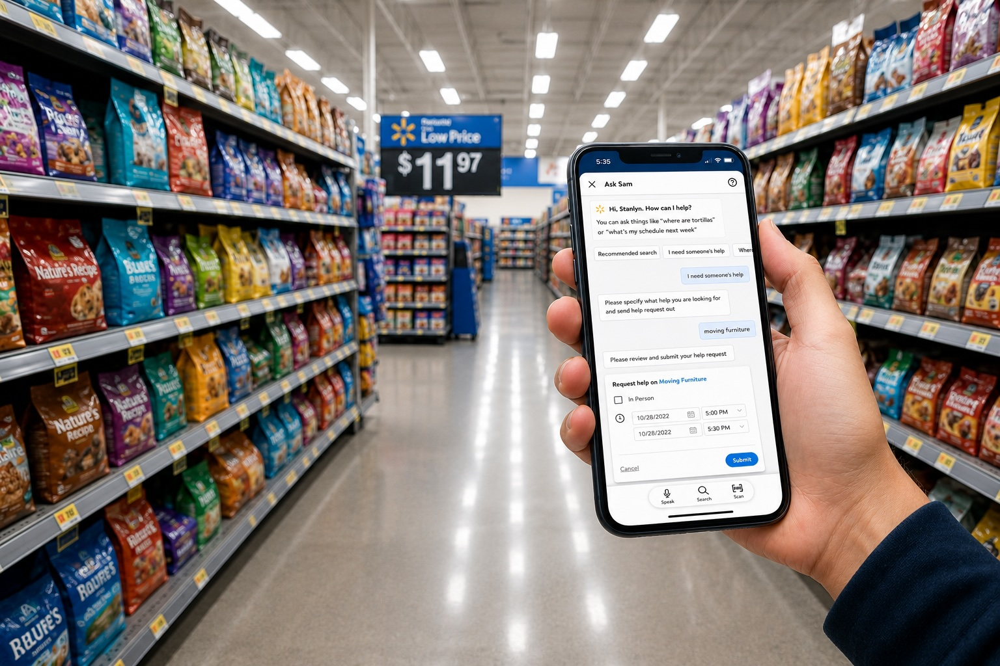
ShippedA conversational and AR-based assistant that evolves the associate experience, bridging physical store tasks with digital intelligence for thousands of Walmart associates.
I'm a Senior Product Designer at Walmart Global Tech with 9+ years shipping and maintaining enterprise platforms and operational systems at scale. I specialize in system, service, and workflow design, turning complex requirements into clear, accessible, production-ready experiences that thousands of people depend on every day.
My work spans security & operations platforms, physical-digital service design (kiosks and preregistration), design systems, and AI-assisted workflows. I approach every project with a platform mindset: not just solving the screen in front of me, but the system underneath it.
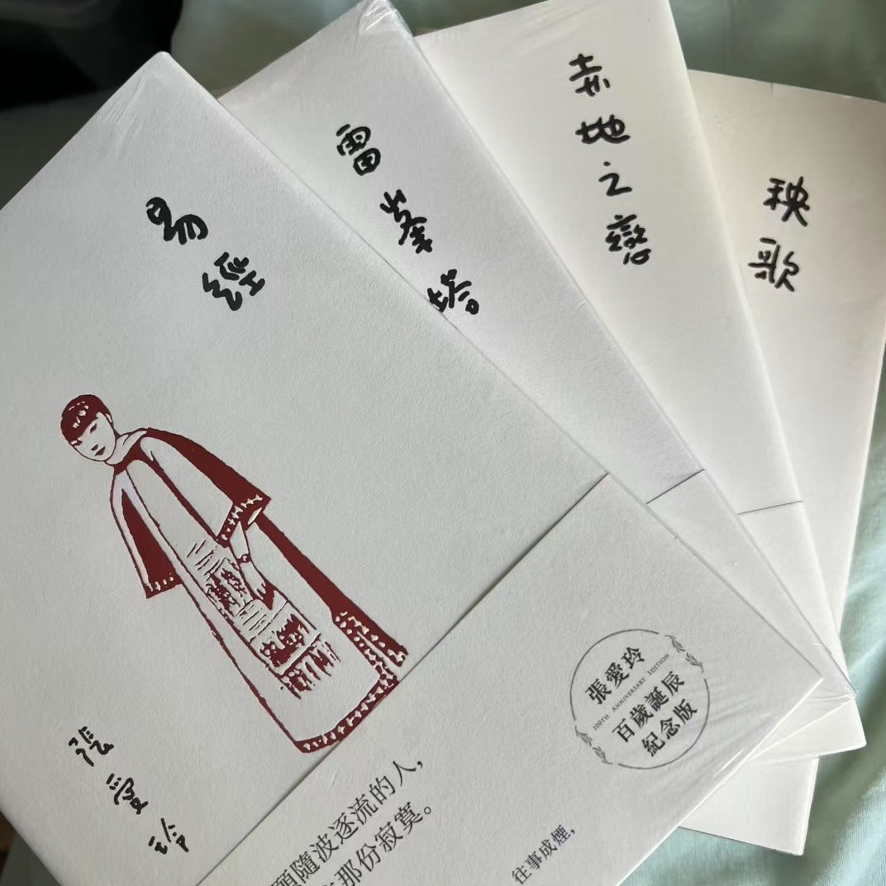
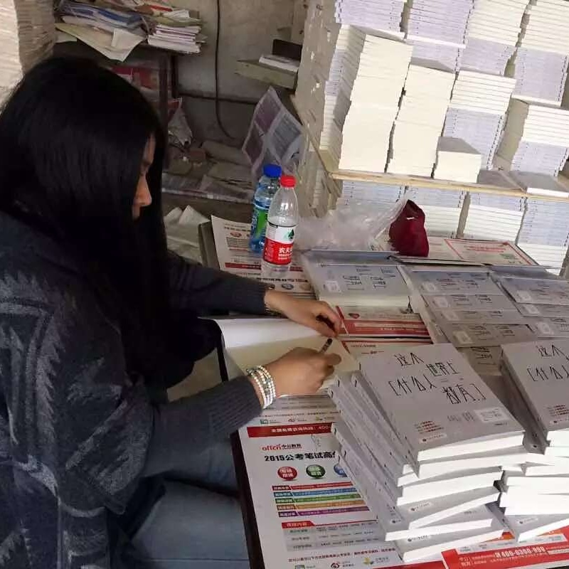
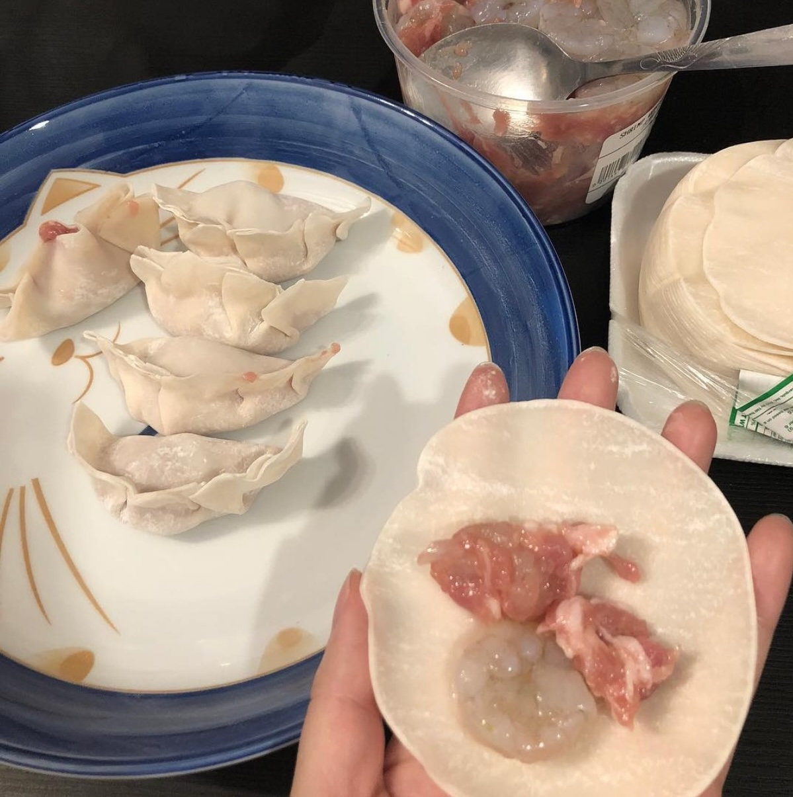
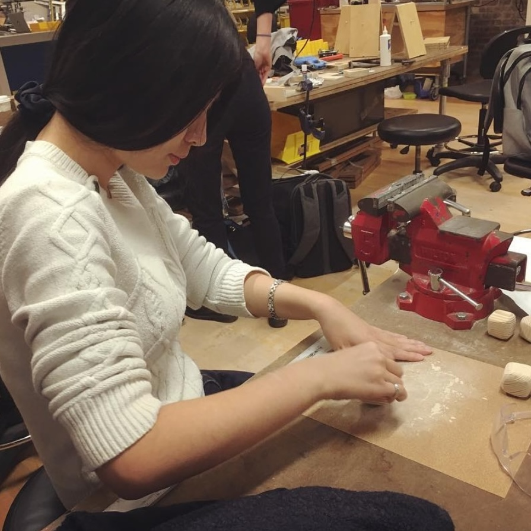
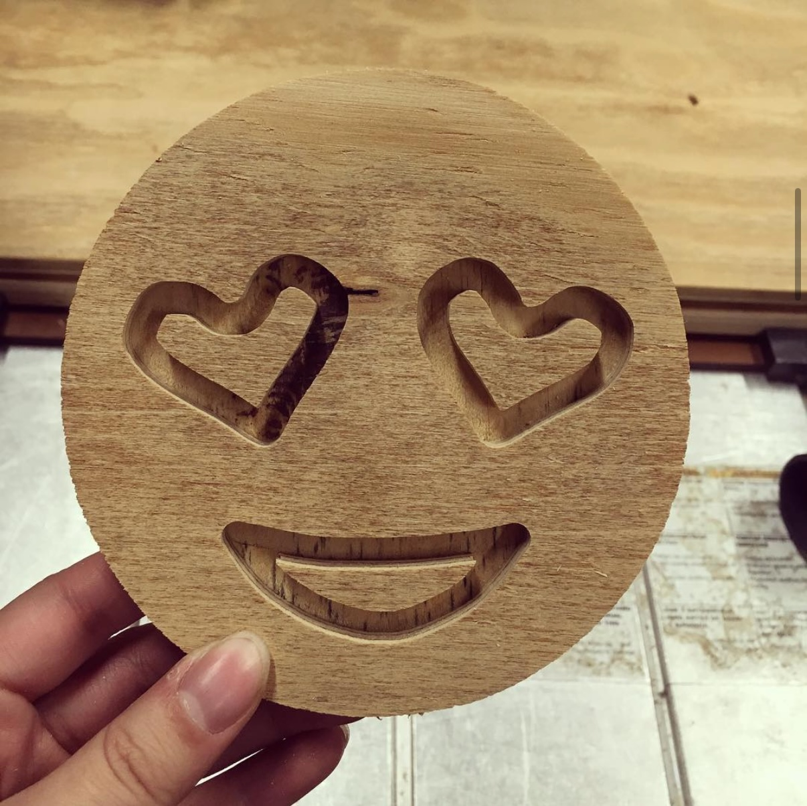
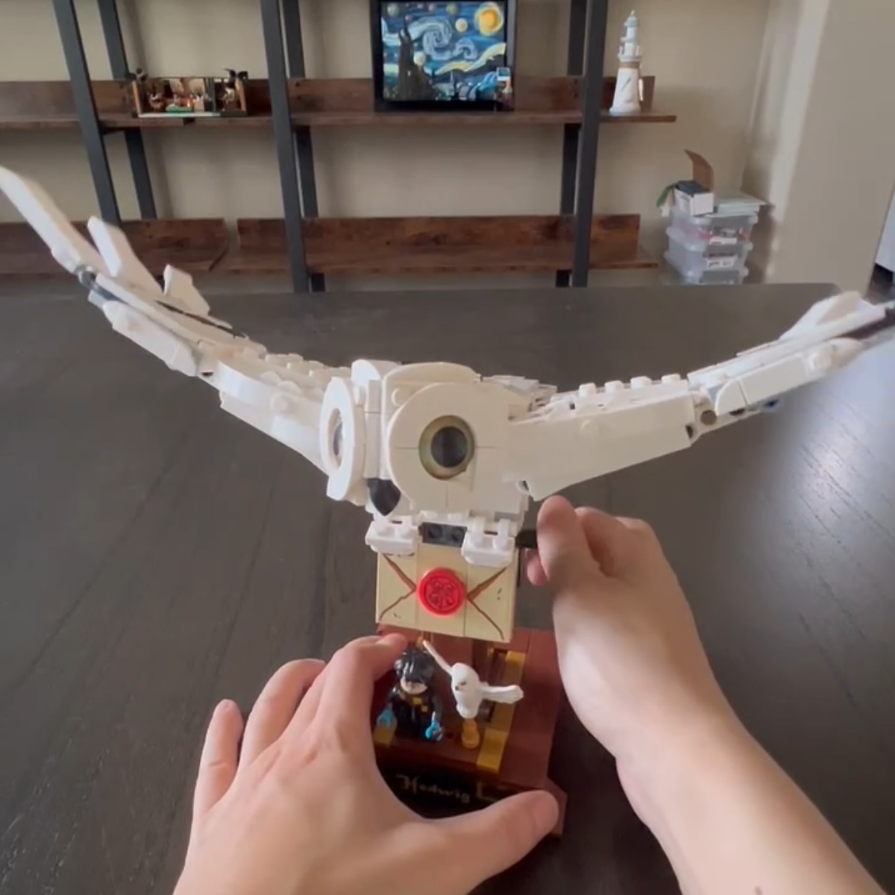
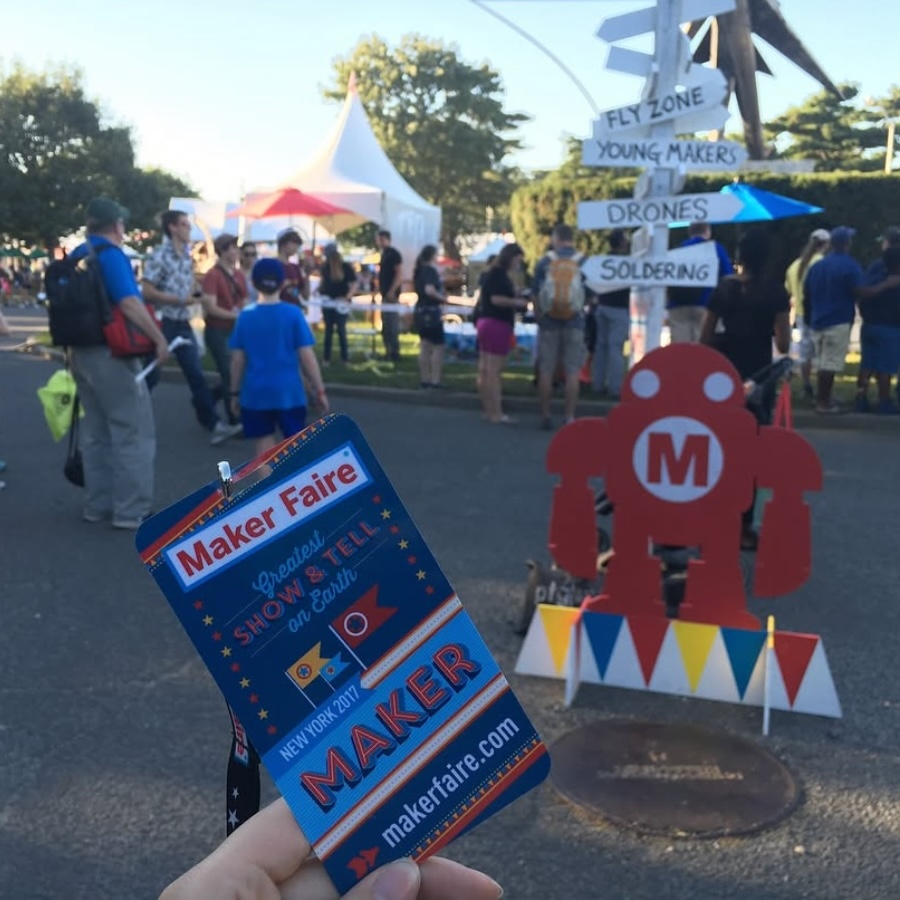
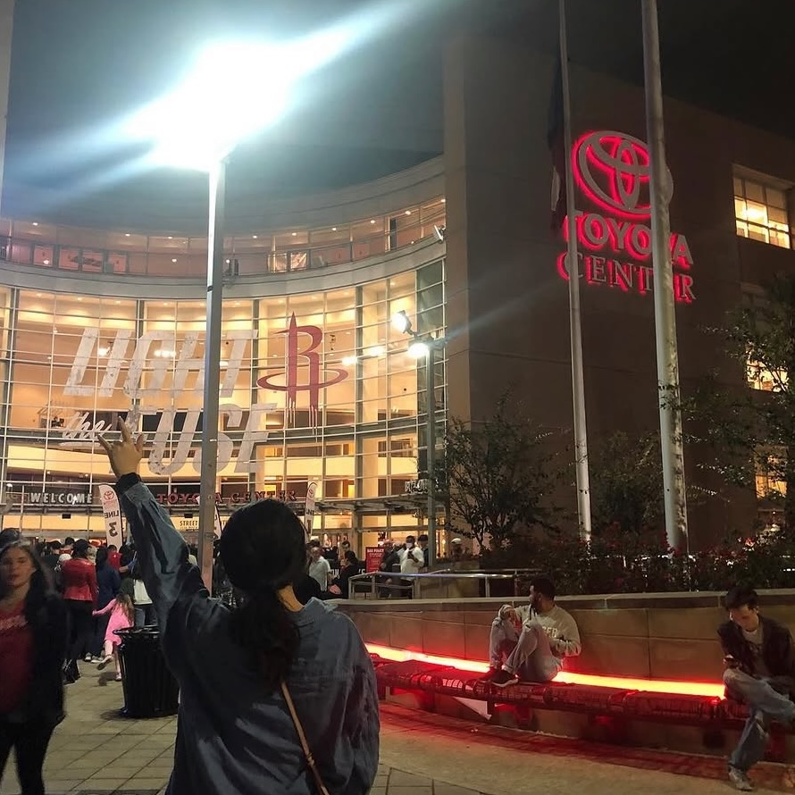
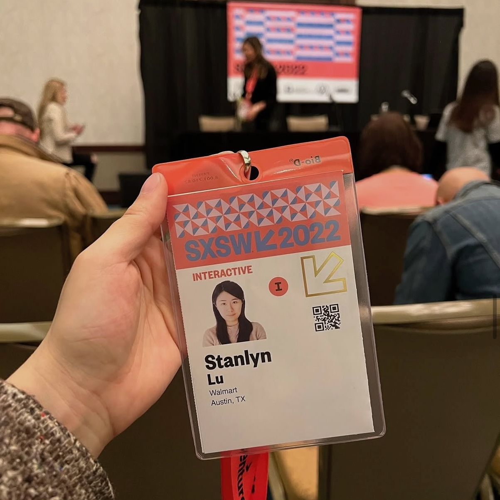
Open to senior and staff product designer roles.